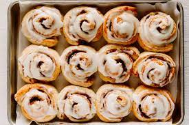

Cinammon Roll

Description
A cinnamon roll (also known as cinnamon bun, cinnamon swirl, cinnamon Danish and
cinnamon snail) is a sweet roll commonly served in Northern Europe (mainly in Nordic countries, but also
in Austria and Germany) and North America.
A cinnamon roll consists of a rolled sheet of yeast-leavened dough onto which a
cinnamon and sugar mixture is sprinkled over a thin coat of butter. The dough is then rolled, cut
into individual portions and baked. Th ingredients and method of preparation
provide a robust and sweet flavor.
Ingredients
- Flour
- Milk
- Yeast
- Powdered, granulated and Brown Sugar
- Egg
- Butter
- Salt
- Cinnamon
- Cream cheese
Steps
- Warm 3/4 cup of milk to around 110 degrees F. Transfer warm milk to the bowl of an
electric mixer and sprinkle 2 1/4 teaspoons of yeast on top. Add in 1/4 cup of sugar, 1 egg, 1 egg yolk and 1/4 cup of melted butter.
Mix until well combined. Next stir in 3 cups of flour and 3/4 teaspoon of salt with a wooden spoon until a dough begins to form.
- Place dough hook on stand mixer and knead dough on medium speed for 8 minutes.
Dough should form into a nice ball and be slightly sticky.
If it's too sticky, add in 2 tablespoons more bread flour.
If you do not want to use an electric mixer, you can use your
hands to knead the dough for 8-10 minutes on a well-floured surface.
- Transfer dough ball to a well-oiled bowl, cover with plastic wrap and a warm towel.
Allow dough to rise for 1 hour to 1 ½ hours, or until doubled in size.
- After dough has doubled in size, transfer dough to a well-floured surface
and roll out into a 14x9 inch rectangle. Spread ¼ cup of softened butter over dough,
leaving a ¼ inch margin at the far side of the dough.
- In a small bowl, mix together 1 ½ tablespoons of cinnamon and 2/3 cups of brown sugar. Use your hands to
sprinkle mixture over the buttered dough, then rub the brown sugar mixture into
the butter.
- Tightly roll dough up, starting from the 9-inch side and place seam side down making sure
to seal the edges of the dough as best you can.
- Cut into 1 inch sections with a serrated knife or floss.
You should get 9 large pieces.
- Place cinnamon rolls in a greased 9x9 inch baking pan or round 9 inch cake pan.
Cover with plastic wrap and a warm towel and let rise again for 30-45 minutes.
- Preheat oven to 350 degrees F. Remove plastic wrap and towel and bake cinnamon rolls
for 20-25 minutes or until just slightly golden brown on the edges. Y Allow them to cool for 5-10 minutes before frosting.
- To make the frosting: In the bowl of an electric mixer, combine 4 oz of cream cheese, 3 tablespoons of butter,
¾ cup of powdered sugar and ½ teaspoon of vanilla extract. Beat until smooth and fluffy. Spread over cinnamon rolls and serve immediately.